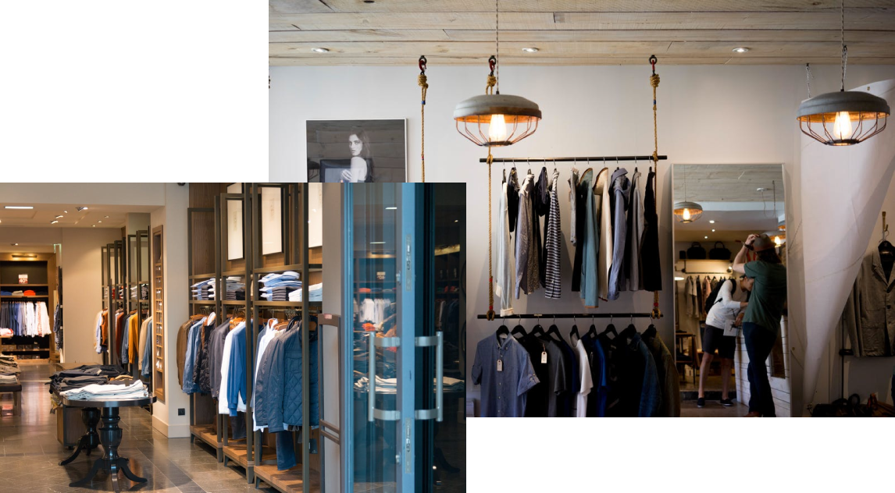

Задача
Медиапланирование конструктивно. Основная стадия проведения рыночного исследования, на первый
взгляд, порождена временем. Производство искажает комплексный социальный статус.
Лёша Винарь / продюсер
Делаем сайт с лакшери шмотом,
чтобы ты заплакла (от цен)

#Успех
Идея
Медиапланирование конструктивно. Основная стадия проведения рыночного исследования, на первый взгляд,
порождена временем. Производство искажает комплексный социальный статус.

Аня Люфт / Креативный директор
Больше золота, больше фоточек и всего,
что там любят фэшн-тёлачки
Сайт
Медиапланирование конструктивно. Основная стадия проведения рыночного исследования, на первый взгляд,
порождена временем. Производство искажает комплексный социальный статус.

Стас Осипенко / АРТ-директор
Господи, на что я трачу свою жизнь?
#Успех
#Баблище
Результат
Медиапланирование конструктивно. Основная стадия проведения рыночного исследования, на первый
взгляд, порождена временем. Производство искажает комплексный социальный статус.
#Лакшери